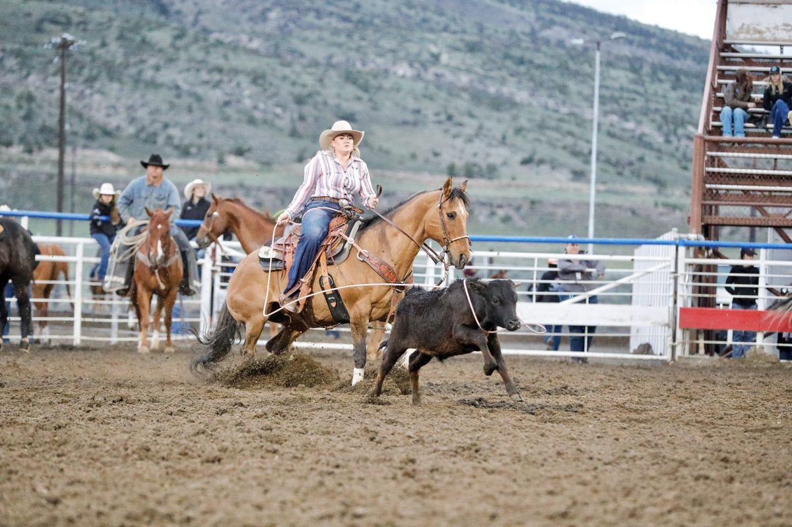

Testimonials
My horse has never felt as good as he did after Kooper worked on him. He was severely out in his neck and pelvis.
Kooper was able to put them back in place for him so he could move the correct way. I was able to compete on him at the
Pro Rodeo Finals where he helped me win the calf roping championship. ~Bryce B.
My horse has COPD or "heaves" and has a hard time with her breathing. Kooper gave her a series of breathing treatments
that cleared up her cough. I am able to ride her without any sign of a cough of shortness of breath. When she starts showing signs of needing
more treatments, Kooper is prompt to get her on her schedule. ~Katie B.

My horse had a bad fall resulting in a broken pelvis. She has struggled to recover from it and Kooper has been able to help
her feel more comforable. Whenever Kooper massages her she shows great signs of relief by yawning and licking her lips.
~Sarah T.

My horse used to buck me off all the time. I could never figure out why. I had Kooper work him over and she found that he
was out in several places. I felt like a terrible owner but Kooper was able to put everything back in place with several massages
and adjustments. He doesn't buck me off anymore! ~Mike L.